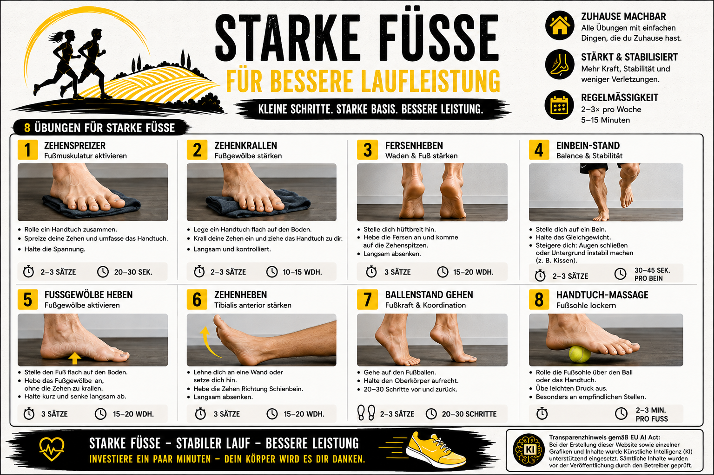
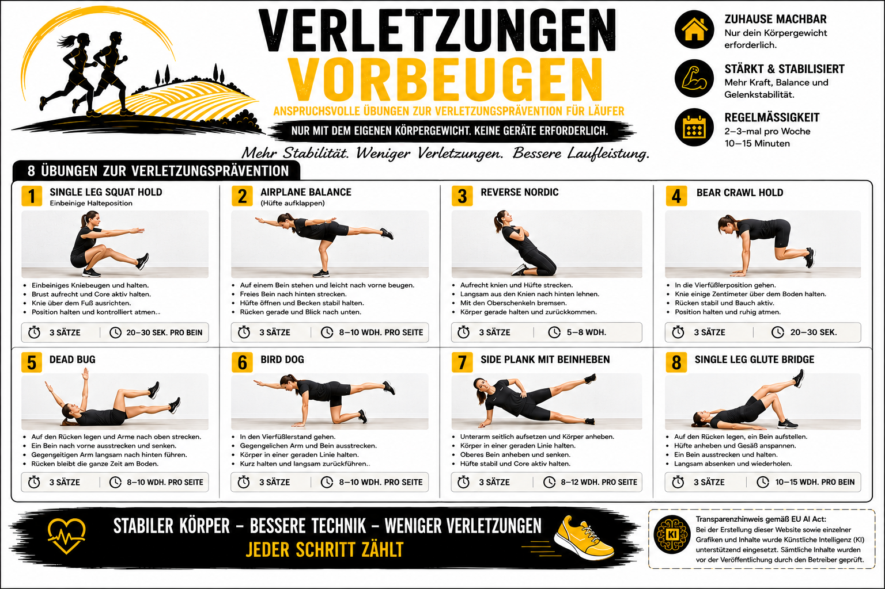

TRAININGSBIBLIOTHEK
Übungen für Läufer.
Lauftechnik, starke Füße und Stabilität – übersichtlich in drei Trainingsbereichen.
ÜBUNGSBEREICHE
Drei Bereiche für dein Lauftraining.
FÜR DAS TRAINING
Technik verbessern. Stabilität aufbauen.
Wähle einen Bereich aus und öffne die komplette Übungsgrafik. Die Grafiken lassen sich vergrößern und als Bild speichern.

LAUFTECHNIK
Lauf-ABC
16 Übungen für Koordination, Technik und einen ökonomischen Laufstil.
Übungen ansehen →
FUSSKRAFT
Starke Füße
Übungen zur Kräftigung, Stabilisierung und Aktivierung der Füße.
Übungen ansehen →
STABILITÄT
Verletzungsprävention
Anspruchsvolle Übungen für Rumpf, Beine, Balance und Stabilität.
Übungen ansehen →